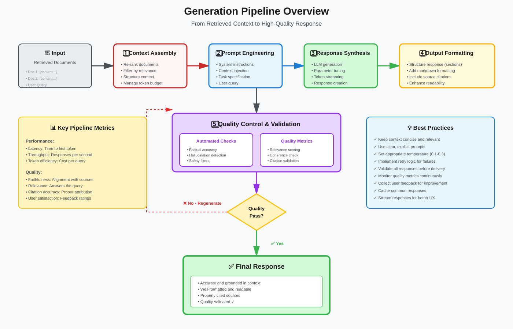
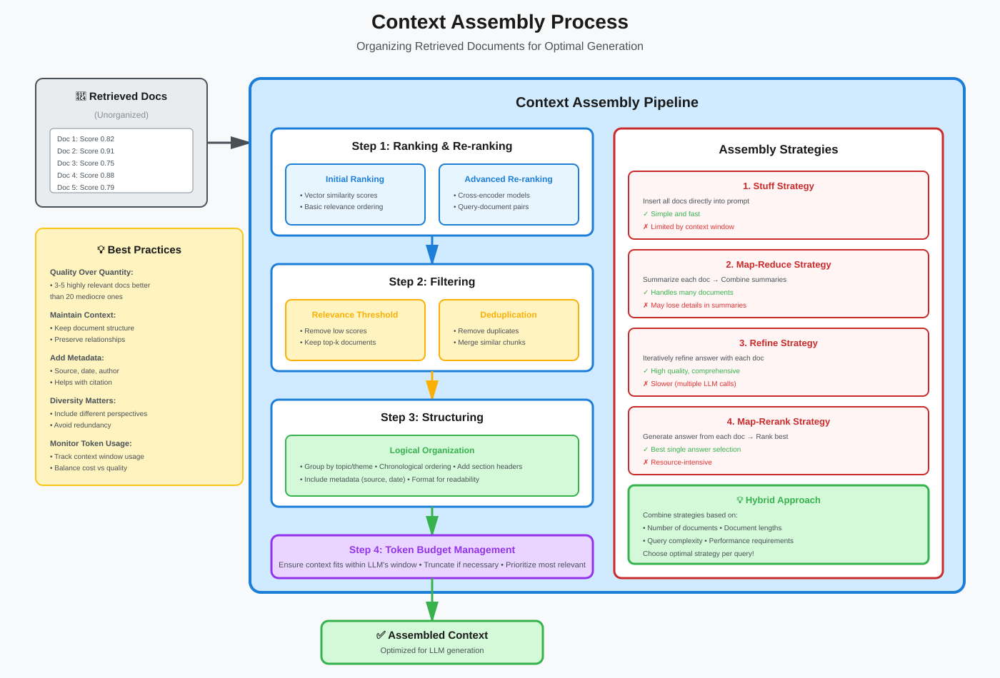
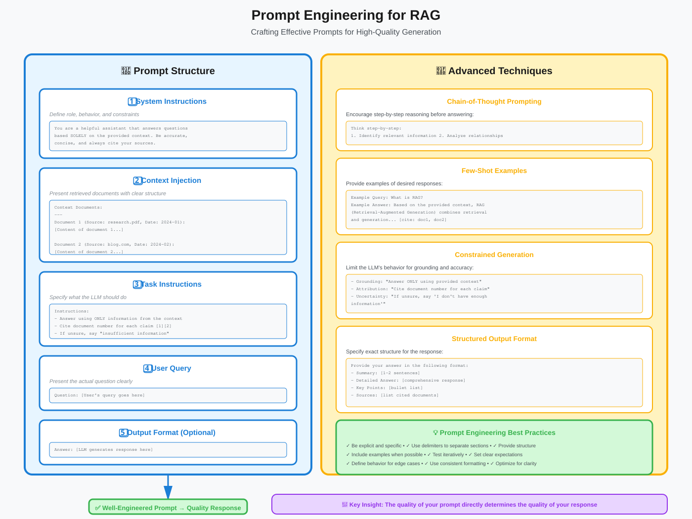
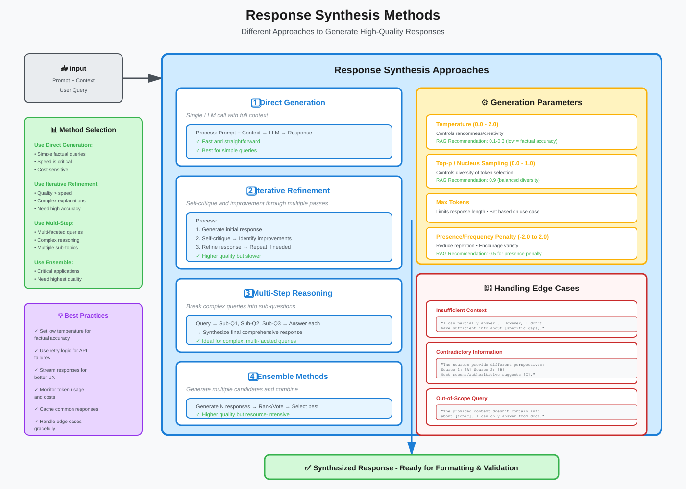
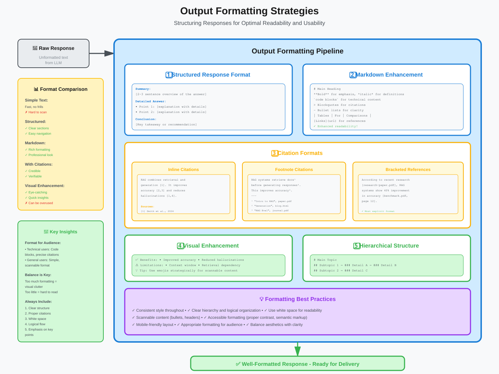
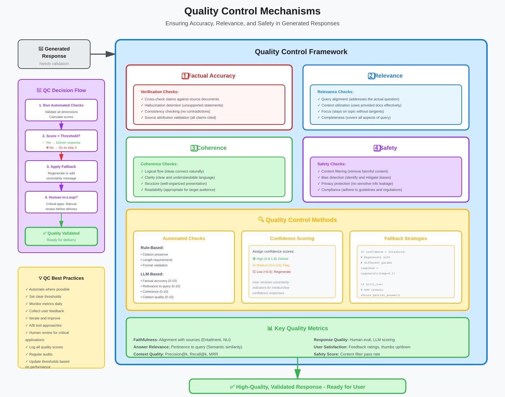

Generation Phase in RAG
Creating Accurate, Contextual, and High-Quality Responses
📚 Quick Navigation
- Introduction
- Generation Pipeline Overview
- Context Assembly
- Prompt Engineering
- Response Synthesis
- Output Formatting
- Quality Control
- Best Practices
- Common Challenges
- References & Further Reading
Introduction
The Generation Phase is the final and crucial step in the RAG pipeline where retrieved context is combined with the user's query to produce a comprehensive, accurate, and contextually relevant response. This phase transforms raw retrieved documents into coherent, useful answers.
Why Generation Matters
The generation phase determines the quality of the final output. Even with perfect retrieval, poor generation can result in: - ❌ Inaccurate or hallucinated information - ❌ Irrelevant or off-topic responses - ❌ Poor formatting and readability - ❌ Lack of source attribution - ❌ Inconsistent or contradictory information
A well-designed generation process ensures that retrieved information is effectively synthesized into high-quality responses.
Generation Pipeline Overview

The generation pipeline consists of six main stages:
1. Context Assembly
Organizing and preparing retrieved documents for the LLM, including ranking, filtering, and structuring the context.
2. Prompt Engineering
Crafting effective prompts that guide the LLM to generate accurate and relevant responses using the retrieved context.
3. Response Synthesis
The LLM processes the prompt and context to generate a coherent response.
4. Output Formatting
Structuring and formatting the response for optimal readability and usability.
5. Quality Control
Validating the response for accuracy, relevance, and safety.
6. Source Attribution
Adding citations and references to support the response with retrieved sources.
Context Assembly

Context assembly is the process of preparing retrieved documents for generation.
Key Components
1. Context Ranking
- Re-ranking: Apply advanced ranking models (cross-encoders) to improve relevance ordering
- Diversity: Ensure diverse perspectives in the context window
- Redundancy removal: Eliminate duplicate or highly similar information
2. Context Filtering
- Relevance thresholding: Filter out low-relevance documents
- Recency filtering: Prioritize recent information for time-sensitive queries
- Source quality: Filter based on source authority and credibility
3. Context Truncation
- Token budget management: Fit context within LLM's context window
- Prioritization strategies:
- Keep most relevant chunks
- Maintain temporal ordering
- Preserve document structure
4. Context Structuring
- Logical organization: Group related information together
- Hierarchical structure: Organize by document, section, or topic
- Metadata inclusion: Add document titles, dates, sources
Context Assembly Strategies
| Strategy | Description | Use Case |
|---|---|---|
| Stuff | Insert all retrieved docs directly into prompt | Small number of docs, large context window |
| Map-Reduce | Summarize each doc, then combine summaries | Many long documents |
| Refine | Iteratively refine answer with each doc | Sequential refinement needed |
| Map-Rerank | Generate answers from each doc, rerank results | Need best single answer |
Prompt Engineering

Effective prompt engineering is critical for generating high-quality responses from retrieved context.
Prompt Components
1. System Instructions
Define the LLM's role, behavior, and constraints:
You are a helpful assistant that answers questions based solely on
the provided context. Be accurate, concise, and cite your sources.
2. Context Injection
Present retrieved documents with clear structure:
Context Documents:
---
Document 1 (Source: research-paper.pdf, Date: 2024-01-15):
[Document content...]
Document 2 (Source: company-blog.com, Date: 2024-02-20):
[Document content...]
3. Task Instructions
Specify what the LLM should do: - Answer format requirements - Citation expectations - Handling of missing information - Tone and style guidelines
4. User Query
Present the actual question clearly:
Question: [User's query]
Answer:
Prompt Engineering Techniques
Chain-of-Thought Prompting
Encourage reasoning before answering:
Think step-by-step:
1. Identify relevant information in the context
2. Analyze the relationships between facts
3. Formulate a comprehensive answer
4. Cite your sources
Few-Shot Examples
Provide examples of desired responses:
Example Query: What is RAG?
Example Answer: Based on the provided context, RAG (Retrieval-Augmented
Generation) is... [cite: doc1, doc2]
Constrained Generation
Limit the LLM's behavior: - Grounding: "Answer only using information from the provided context" - Attribution: "Cite the document number for each claim" - Uncertainty handling: "If unsure, say 'I don't have enough information'"
Output Formatting
Specify desired structure:
Provide your answer in the following format:
- Summary: [1-2 sentences]
- Detailed Answer: [comprehensive response]
- Sources: [list of cited documents]
Prompt Optimization Tips
- ✅ Be explicit and specific - Clearly state requirements
- ✅ Provide structure - Use formatting and sections
- ✅ Include examples - Show desired output format
- ✅ Test iteratively - Refine based on results
- ✅ Use delimiters - Separate context from instructions
- ✅ Set expectations - Define behavior for edge cases
Response Synthesis

Response synthesis is where the LLM generates the actual answer using the assembled context and prompt.
Synthesis Approaches
1. Direct Generation
- Single LLM call with full context
- Fast and straightforward
- Best for simple queries
2. Iterative Refinement
- Initial response generation
- Self-critique and improvement
- Multiple refinement passes
- Better quality but slower
3. Multi-Step Reasoning
- Break complex queries into sub-questions
- Generate intermediate answers
- Synthesize final comprehensive response
- Ideal for complex, multi-faceted queries
4. Ensemble Methods
- Generate multiple candidate responses
- Compare and combine best elements
- Voting or ranking to select final answer
- Higher quality but resource-intensive
Generation Parameters
Control LLM behavior through parameters:
| Parameter | Range | Effect | Use Case |
|---|---|---|---|
| Temperature | 0.0-2.0 | Randomness/creativity | Lower for factual, higher for creative |
| Top-p | 0.0-1.0 | Nucleus sampling | Controls diversity |
| Max tokens | Varies | Response length | Limit output size |
| Presence penalty | -2.0 to 2.0 | Reduce repetition | Encourage variety |
| Frequency penalty | -2.0 to 2.0 | Penalize common tokens | Avoid repetitive phrases |
Recommended Settings for RAG: - Temperature: 0.1-0.3 (factual accuracy) - Top-p: 0.9 (balanced diversity) - Presence penalty: 0.5 (reduce repetition)
Handling Edge Cases
Insufficient Context
Response: "Based on the available information, I can partially answer
your question. [Provide what's available]. However, I don't have
sufficient information about [specific gaps]."
Contradictory Information
Response: "The sources provide different perspectives:
- Source 1 states: [claim A]
- Source 2 indicates: [claim B]
The most recent/authoritative source suggests [conclusion]."
Out-of-Scope Queries
Response: "The provided context doesn't contain information about
[topic]. I can only answer based on the available documents."
Output Formatting

Proper formatting enhances readability and usability of generated responses.
Formatting Strategies
1. Structured Responses
Break responses into clear sections:
Summary Format:
Summary: [2-3 sentence overview]
Details:
- Point 1: [explanation]
- Point 2: [explanation]
- Point 3: [explanation]
Conclusion: [key takeaway]
Sources: [1, 2, 3]
Q&A Format:
Q: [Original question]
A: [Concise answer]
Additional Context:
[Detailed information]
Related Topics:
- [Topic 1]
- [Topic 2]
2. Markdown Formatting
Use markdown for better readability:
- Bold for emphasis
- Italics for definitions
- Code blocks for technical content
- > Blockquotes for citations
- Lists for structured information
- Tables for comparisons
3. Citation Formats
Inline Citations:
RAG combines retrieval and generation [1]. It improves accuracy [2, 3]
and reduces hallucinations [1, 4].
Sources:
[1] Smith et al., "RAG Systems", 2024
[2] Jones, "Vector Search", 2024
Footnote Citations:
RAG systems retrieve relevant documents¹ before generating responses².
This approach significantly improves factual accuracy³.
---
¹ "Introduction to RAG", research-paper.pdf
² "Generation Methods", blog-post.html
³ "RAG Evaluation", academic-journal.pdf
Bracketed References:
According to recent research [research-paper.pdf], RAG systems show
40% improvement in accuracy [benchmark-report.pdf, page 12].
4. Visual Enhancement
Emojis for Emphasis:
✅ Key Benefits:
• Improved accuracy
• Reduced hallucinations
⚠️ Limitations:
• Context window constraints
• Retrieval quality dependency
Hierarchical Structure:
# Main Topic
## Subtopic 1
### Detail A
### Detail B
## Subtopic 2
### Detail C
Formatting Best Practices
- ✅ Consistent style - Use uniform formatting throughout
- ✅ Clear hierarchy - Organize information logically
- ✅ White space - Use spacing for readability
- ✅ Scannable content - Enable quick information extraction
- ✅ Accessible formatting - Consider all users
- ✅ Mobile-friendly - Ensure readability on all devices
Quality Control

Quality control ensures responses meet standards for accuracy, relevance, and safety.
Quality Dimensions
1. Factual Accuracy
- Verification: Cross-check claims against source documents
- Hallucination detection: Identify unsupported statements
- Consistency checking: Ensure no contradictions
- Source attribution: Verify all claims are properly cited
2. Relevance
- Query alignment: Response addresses the actual question
- Context utilization: Uses provided documents effectively
- Focus: Stays on topic without tangents
- Completeness: Covers all aspects of the query
3. Coherence
- Logical flow: Ideas connect naturally
- Clarity: Clear and understandable language
- Structure: Well-organized presentation
- Readability: Appropriate for target audience
4. Safety
- Content filtering: Remove harmful or inappropriate content
- Bias detection: Identify and mitigate biases
- Privacy protection: Ensure no sensitive information leakage
- Compliance: Adhere to guidelines and regulations
Quality Control Methods
Automated Checks
Rule-Based Validation:
def validate_response(response, context):
checks = {
'has_citations': check_citations(response),
'no_hallucinations': verify_grounding(response, context),
'appropriate_length': check_length(response),
'safe_content': content_filter(response)
}
return all(checks.values())
LLM-Based Evaluation:
Evaluate the following response for:
1. Factual accuracy (0-10)
2. Relevance to query (0-10)
3. Coherence (0-10)
4. Source attribution quality (0-10)
Response: [generated response]
Context: [source documents]
Query: [user question]
Confidence Scoring
- Assign confidence scores to responses
- Flag low-confidence answers for review
- Provide uncertainty indicators to users
Fallback Strategies
if confidence_score < threshold:
# Regenerate with different parameters
response = regenerate_with_temperature(0.1)
if still_low_confidence:
# Return partial answer with caveats
return add_uncertainty_message(response)
Quality Metrics
| Metric | Description | Measurement |
|---|---|---|
| Faithfulness | Alignment with source documents | Entailment score, NLI models |
| Answer Relevance | Pertinence to user query | Semantic similarity, LLM judge |
| Context Precision | Quality of retrieved context | Precision@k, MRR |
| Context Recall | Coverage of relevant information | Recall@k |
| Response Quality | Overall response excellence | Human evaluation, LLM scoring |
Human-in-the-Loop
For critical applications: 1. Pre-deployment review: Manual QA before production 2. Sampling review: Random response audits 3. User feedback: Collect and analyze user ratings 4. Continuous improvement: Iterate based on findings
Best Practices
🎯 Generation Best Practices
Context Management
- ✅ Keep context concise and relevant
- ✅ Structure context logically
- ✅ Include metadata (source, date, etc.)
- ✅ Remove redundant information
- ✅ Fit within token limits
Prompt Design
- ✅ Be explicit and specific in instructions
- ✅ Use clear delimiters and structure
- ✅ Provide few-shot examples
- ✅ Define expected output format
- ✅ Handle edge cases gracefully
- ✅ Iterate and refine based on results
Response Generation
- ✅ Use appropriate generation parameters
- ✅ Implement retry logic for failures
- ✅ Monitor token usage and costs
- ✅ Cache common responses
- ✅ Stream responses for better UX
Quality Assurance
- ✅ Validate all responses before delivery
- ✅ Implement hallucination detection
- ✅ Ensure proper source attribution
- ✅ Monitor quality metrics
- ✅ Collect user feedback
- ✅ Continuously improve prompts
User Experience
- ✅ Format for readability
- ✅ Provide clear citations
- ✅ Handle uncertainty transparently
- ✅ Enable follow-up questions
- ✅ Offer related information
- ✅ Optimize response time
Common Challenges
Challenge 1: Hallucination
Problem: LLM generates information not in the context
Solutions: - Strict grounding instructions in prompts - Lower temperature (0.1-0.3) - Post-generation verification - Confidence scoring - Human review for critical content
Challenge 2: Context Window Limitations
Problem: Too much retrieved content for LLM context window
Solutions: - Better retrieval (quality over quantity) - Context compression and summarization - Map-reduce strategies - Hierarchical processing - Use models with larger context windows
Challenge 3: Irrelevant Responses
Problem: LLM doesn't use context effectively
Solutions: - Improve prompt clarity - Add explicit instructions to use context - Provide better context structure - Use few-shot examples - Implement relevance checks
Challenge 4: Poor Source Attribution
Problem: Missing or incorrect citations
Solutions: - Explicit citation requirements in prompt - Structured output format - Post-processing to add citations - Validation checks for citation presence - Training/fine-tuning for citation behavior
Challenge 5: Inconsistent Quality
Problem: Response quality varies significantly
Solutions: - Standardize prompt templates - Implement quality checks - Use consistent generation parameters - Regular prompt optimization - A/B testing different approaches
Challenge 6: Slow Response Times
Problem: Generation takes too long
Solutions: - Optimize context size - Use faster LLM models - Implement caching strategies - Stream responses - Parallel processing when possible - Monitor and optimize token usage
References & Further Reading
Academic Papers
- "Retrieval-Augmented Generation for Knowledge-Intensive NLP Tasks" - Lewis et al., 2020
- "In-Context Retrieval-Augmented Language Models" - Ram et al., 2023
- "Self-RAG: Learning to Retrieve, Generate, and Critique through Self-Reflection" - Asai et al., 2023
Technical Documentation
Tutorials & Guides
Tools & Libraries
- LangChain: RAG framework with generation tools
- LlamaIndex: Data framework for LLM applications
- Guardrails AI: Output validation and quality control
- Phoenix: LLM observability and evaluation
Last Updated: October 2025
Version: 2.0
This document is part of the comprehensive RAG documentation suite. For related topics, see: Indexing, Retrieval, Query Construction